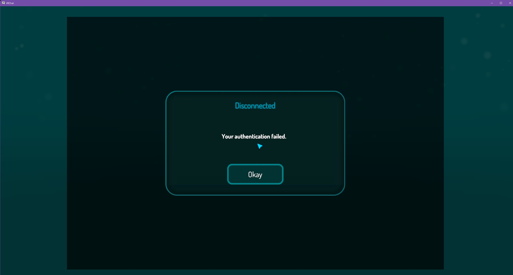
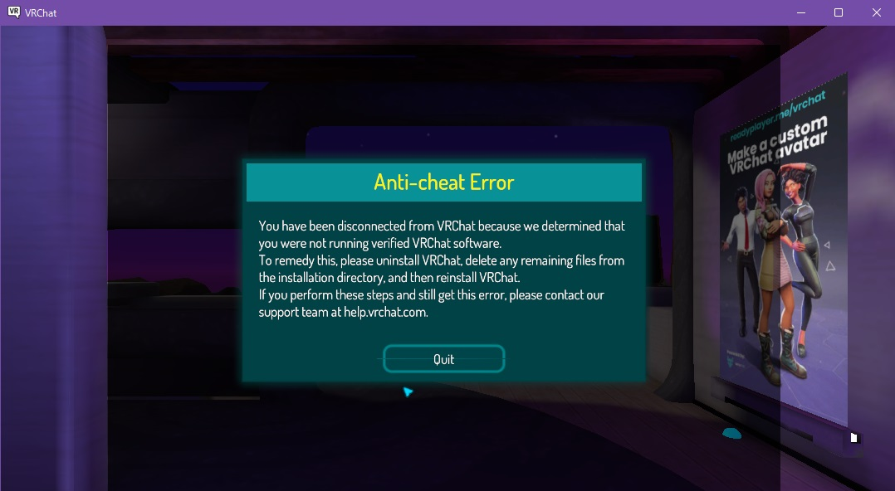
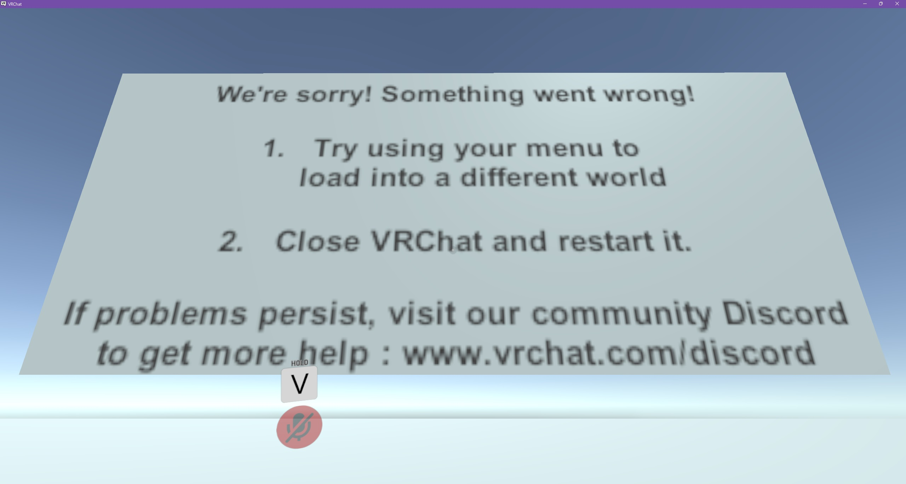
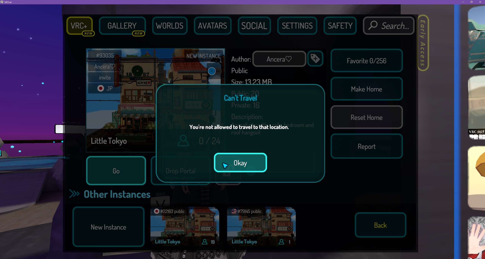
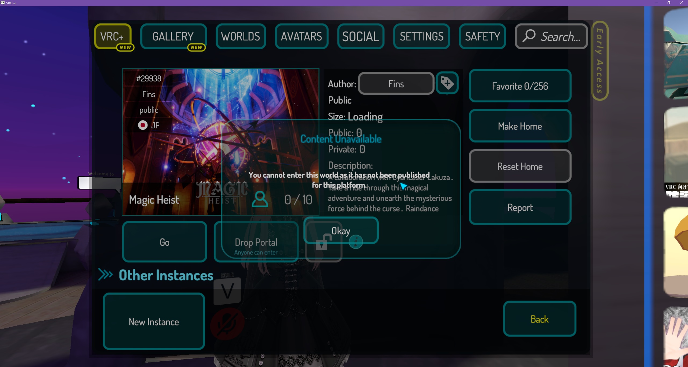

SE辞めた/Kotlin/Python/Hugo/Obsidian
好きなもの: OSS、個人サイト、クロスプラットフォーム
嫌いなもの: サブスク、いかがでしたかブログ、ビッグテックの囲い込み
生息地: mastodon
VRChatの動作があまりにも不安定で狂いそうになったのですがタイトルの通りの対処法ですべて直ったという話です
・・・と、方法に関しては一言で済ませることができるのですが、経緯やエラーのケースについても書いておこうかなと思います
ログインの時に正しいパスワードを入力してもエラーが起きるくらい、VRCの動作が不安定という地獄
↓
遅延を減らすために一時的に有線接続にしてみる
↓
何故かGoogleすら開けなくなる
↓
コマンドプロンプトでarp -aしたらルータは見えていた
↓
ブラウザで192.168.1.1にアクセスしてルータの設定をいじってみる
↓
IPv6を無効にするよう設定にしたらちゃんとGoogleにつながるようになる、VRCの不安定さも嘘のように改善する
・・・という感じでした。意味不明

Disconnected
Your authentication failed.
と出る。IDもパスワードも合ってるのに。何故か出る
Disconnectedと出てるので接続自体が失敗している説

SteamとFirefoxしか起動してないのにお前チートしてるだろと言われる
そんなこと言ってるとVRCアンチになるぞ！！！

ざぁこ♡

Can't travel
You're not allowed to travel to that location.
といった文章が出る。最初おま国されてるのかと思った

Content Unavailable
You cannot enter this world as it has not been published for this platform.
といった文章が出る。
以上のような様々なエラーが降り掛かってきたので心が折れそうになったのですが、IPv6を無効にしてからは全て発生しなくなりました
ですので、動作の不安定さに悩まされいている人はルータの設定を見直してみると良いかと思われます・・・
ラーメン
SE辞めた/Kotlin/Python/Hugo/Obsidian
好きなもの: OSS、個人サイト、クロスプラットフォーム
嫌いなもの: サブスク、いかがでしたかブログ、ビッグテックの囲い込み
生息地: mastodon